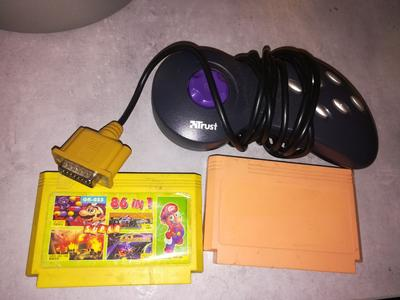

В выходные ходил прогуляться на барахолку, и там внезапно почувствовал запах, который у меня прямо однозначно проассоциировался с ZX-Ревю #7-8, 1996. Что за хрень, скажете вы, ведь ничем, кроме типографии он не пах. И я так сперва подумал, а потом сообразил. В 90-е у мамы был флакон дешевых духов. Дешевых настолько, что пользоваться ими по назначению было как-то неприлично. Поэтому использовались они по другому, главному предназначению всех спиртосодержащих жидкостей в те годы — для протирки головки магнитофона. Настольная жидкость спектрумиста, если хотите. И однажды я ее пролил, и вы уже догадались, на какой журнал.
И вот именно эти запахом меня и накрыло тем воскресным утром. То ли кто-то надушился(-лась) старыми запасами, то ли кто-то продавал флакончик... И тут, ребята, я осознал, что запахи — это самая ностальгическая фигня из возможных. Мы просто не умеем их синтезировать по требованию. Мы можем посмотреть фильм, который нравился в десять лет, послушать музыку, поиграть в игры... Но вот запахи, которые в десять лет казались совершенно обычными, мы по желанию уже никак не понюхаем. Поэтому когда с ними вдруг сталкиваешься, ностальгический эффект десятикратный.
#zxspectrum
А это улов с той прогулки. Картриджи оба многоигровки, зато по 25 рублей. Забавно, что в ~1996 они стоили ровно столько же. И геймпад для геймпорта за стольник. Пойдет мне в «трешку».

{kind=link}
{kind=link}